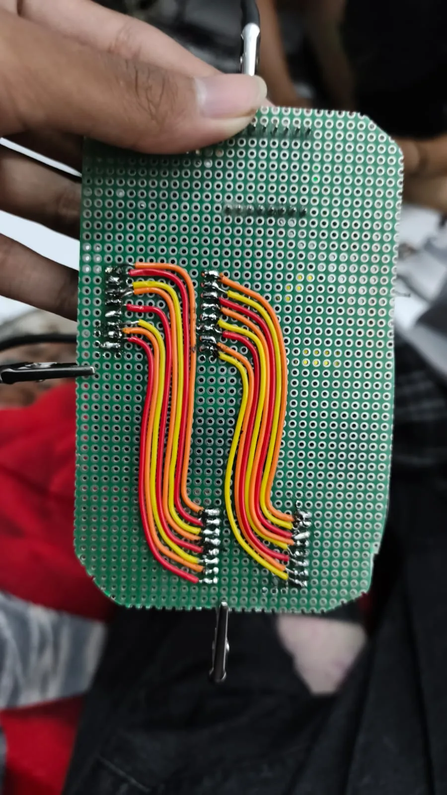
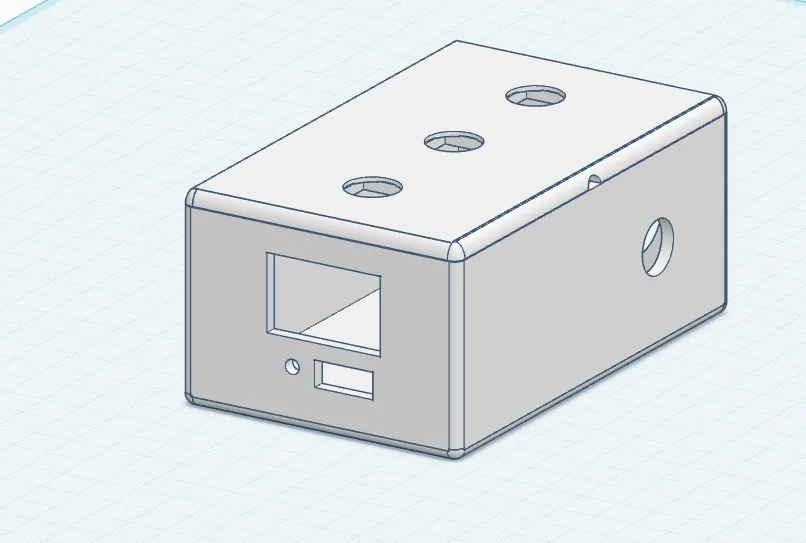

Ringkasan
Proyek AAC (Augmentative and Alternative Communication) — Bicara Warna ini berangkat dari hasil asesmen lapangan Kelompok 2 Pendidikan Khusus Universitas Lambung Mangkurat terhadap seorang anak perempuan berusia 8 tahun (Subjek N.M.). Secara bahasa reseptif, N.M. memahami instruksi sederhana, tetapi secara ekspresif ia belum mampu mengucapkan kalimat dan hanya menunjuk benda atau mengucap “ah”. Meski ibunya cukup memahami sebagian isyarat tersebut, kesalahpahaman dengan guru maupun teman-teman di sekolah kerap membuat N.M. menangis karena keinginannya tidak tersampaikan.
Untuk menjembatani potensi komunikasi N.M., saya mewujudkan rancangan alat “Bicara Warna” menjadi perangkat keras fungsional: memadukan tiga tombol tekan warna mencolok (Merah untuk “Mau”, Biru untuk “Iya”, dan Hijau untuk “Tidak”), mikrokontroler Arduino Nano V3, modul pemutar MP3 dengan kartu memori, speaker 4 cm menghadap belakang, sakelar On/Off di sisi kanan, serta baterai isi ulang 18650 di dalam casing cetak 3D PLA+ yang dilengkapi pengait lanyard.
Simulasi Interaktif: Tombol Suara Bicara Warna
Klik salah satu dari tiga tombol warna di bawah ini untuk melihat jalur sinyal pada Arduino Nano V3 dan respons suara yang dikeluarkan speaker.
Fitur utama
Tiga tombol komunikasi berlambang warna
Tombol fisik berukuran besar dengan kontras warna merah (“mau”), biru (“iya”), dan hijau (“tidak”) memudahkan motorik jari anak menekan pilihan secara langsung tanpa menu yang rumit.
Keluaran suara artikulasi jelas
Saat tombol ditekan, Arduino Nano V3 memerintahkan modul MP3 memutar rekaman suara berartikulasi konsisten melalui speaker 4 cm sehingga langsung dipahami oleh orang tua, guru, maupun teman sebaya.
Implementasi
Penataan Jalur Kabel & Wiring PCB
Merangkai dan menyolder jalur tiga push button, Arduino Nano V3, modul MP3 player, speaker 4 cm, sakelar daya, dan dudukan baterai 18650 di atas papan PCB matriks agar tahan terhadap guncangan saat dibawa anak beraktivitas.
Pemrograman Firmware Arduino IDE (.ino)
Menulis sketch .ino pada Arduino IDE untuk memantau status pin input tombol dengan logika anti-bouncing dan mengirimkan instruksi serial ke pemutar MP3 tanpa jeda.
Integrasi Casing 3D-Print PLA+
Memasang seluruh rangkaian ke dalam casing PLA+ yang menempatkan tiga tombol di sisi atas, lubang keluaran suara di bagian belakang, sakelar On/Off di samping kanan, dan lubang pengait lanyard di bagian atas.
Galeri
Hasil alat, proses pengerjaan, dan konteks lapangan. Pilih foto untuk memperbesar; gunakan tombol panah atau swipe untuk menjelajah.




